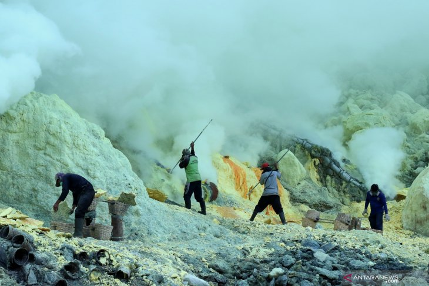
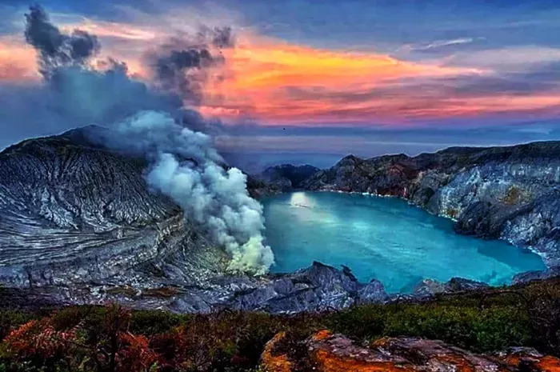

Galeri Keindahan
Sekilas pandang keindahan alam Banyuwangi dari puncak Kawah Ijen.






Jelajahi fenomena magis Kawah Ijen, tempat di mana api biru menyala di tengah kegelapan malam dan danau kawah asam terbesar di dunia.
Pelajari Lebih LanjutMengapa Kawah Ijen begitu istimewa dan berbeda dari gunung berapi lainnya?
Api biru di Kawah Ijen sebenarnya adalah hasil dari pembakaran gas sulfur (belerang) yang muncul dari celah-celah gunung berapi. Suhu gas bisa mencapai 600 derajat Celcius.
Saat gas sulfur bertemu dengan udara, ia menyala dengan nyala berwarna biru elektrik. Fenomena ini hanya terlihat jelas pada malam hari atau sebelum fajar, menciptakan pemandangan yang menyerupai aliran lava berwarna biru, namun sejatinya itu adalah api gas.
Selain api biru, Kawah Ijen juga memiliki danau kawah dengan pH hampir 0 (sangat asam), yang merupakan danau asam terbesar di dunia.
Tiga alasan utama mengapa Kawah Ijen wajib masuk dalam daftar perjalanan Anda.
Kawah Ijen adalah salah satu dari sedikit tempat di bumi di mana Anda bisa melihat fenomena api biru elektromagnetik ini.
Danau kawah berwarna toska yang memukau ini memiliki tingkat keasaman tinggi dan merupakan yang terbesar di dunia.
Saksikan ketangguhan penambang belerang lokal yang mengangkat beban berat turun-naik gunung dengan cara tradisional.
Sekilas pandang keindahan alam Banyuwangi dari puncak Kawah Ijen.
Persiapan penting sebelum Anda mendaki ke puncak Kawah Ijen.